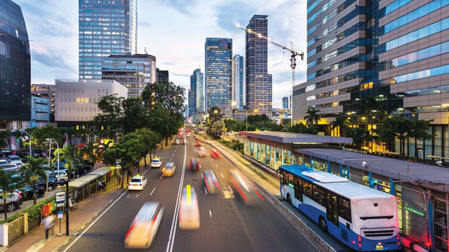
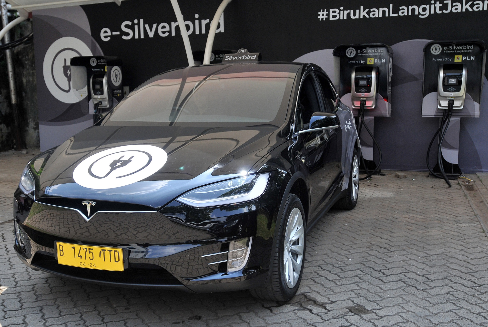
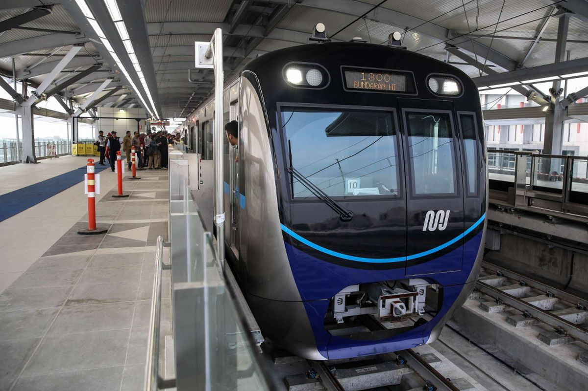
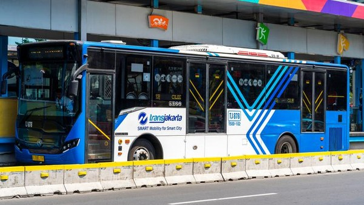

Selamat Datang di CityMoveNavigator!
CityMoveNavigator adalah aplikasi yang dirancang untuk membantu Anda memilih moda transportasi yang paling efisien di kota. Dengan informasi real-time mengenai opsi transportasi, kondisi lalu lintas, dan estimasi waktu perjalanan, kami bertujuan untuk mengurangi kemacetan dan mengoptimalkan waktu perjalanan Anda.
Fitur Utama:
- Informasi rute transportasi.
- Update kondisi lalu lintas secara real-time.
- Saran transportasi yang cepat dan ramah lingkungan.

Jelajahi Fitur Kami
Klik tombol di bawah untuk mengetahui lebih lanjut tentang fitur aplikasi kami.
Lihat Rute Transportasi Cek Kondisi Lalu Lintas Dapatkan Tips dan InfoAvailable Transport Options


